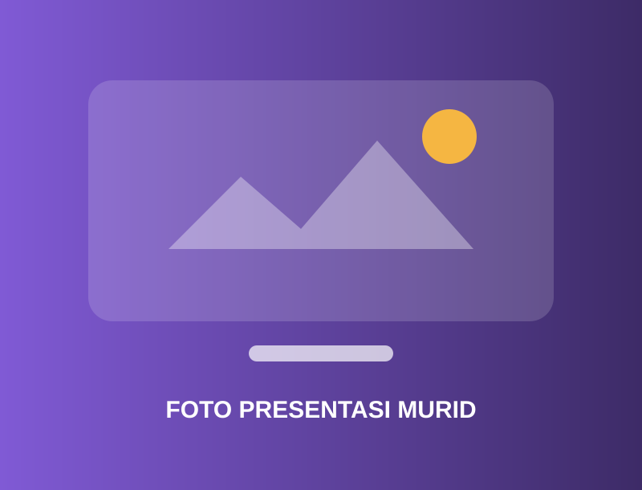
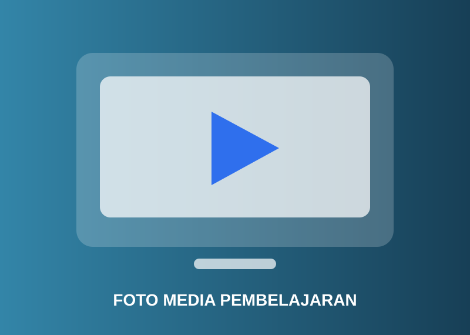
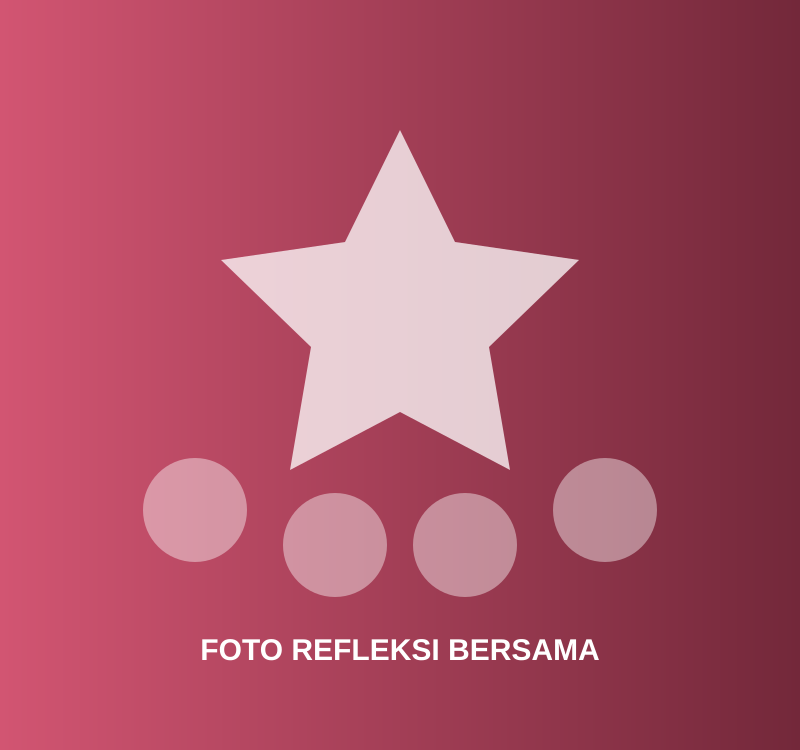

Momen dalam proses pembelajaran
Galeri kegiatan di kelas, kolaborasi murid, praktik mengajar, dan pengembangan profesional.
Galeri kegiatan
Cerita yang terekam dalam gambar
Semua gambar menggunakan lazy loading. Ganti berkas contoh di folder assets/images dengan foto kegiatan Anda.

Tambahkan keterangan foto.

Tambahkan keterangan foto.

Tambahkan keterangan foto.

Tambahkan keterangan foto.

Tambahkan keterangan foto.

Tambahkan keterangan foto.
Perjalanan juga ditandai oleh pencapaian.
Lihat sertifikat, pelatihan, dan pengakuan profesional.